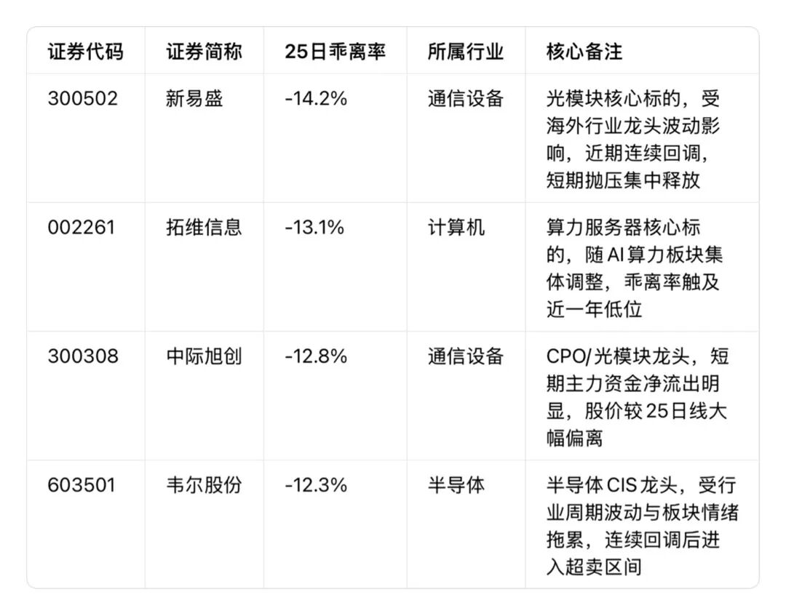
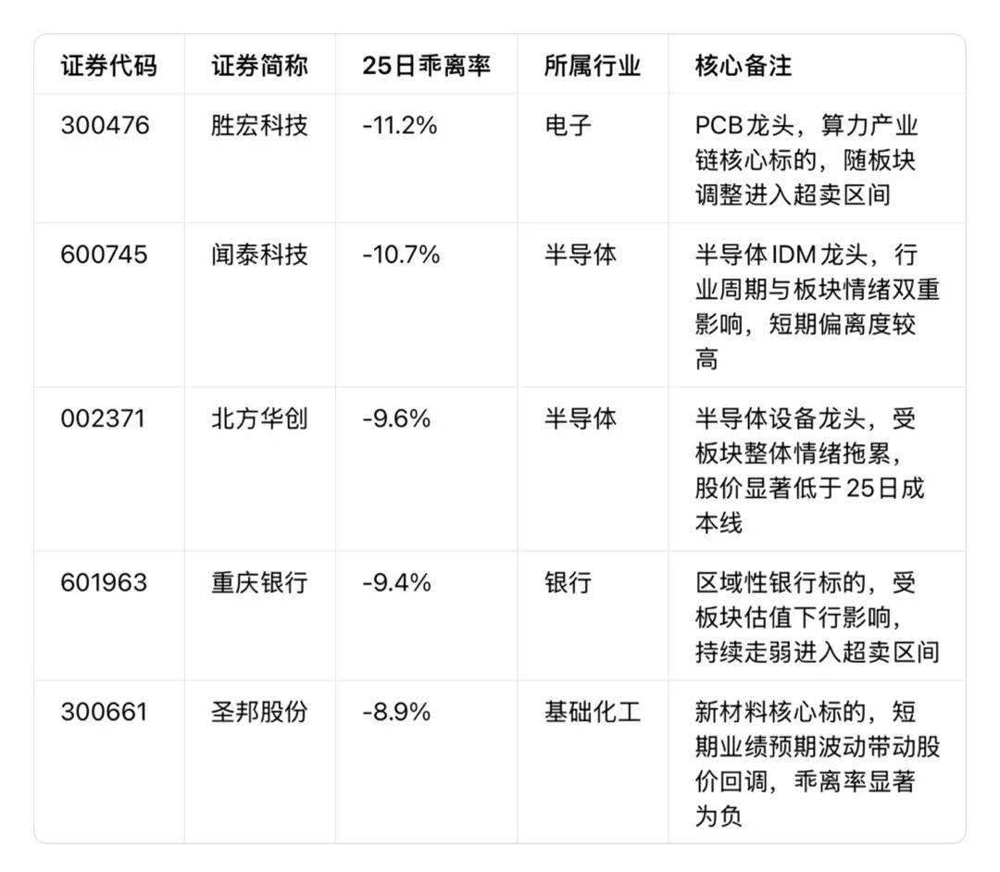

从160万日元本金到190亿身家，27岁10分钟狂赚20亿，从家里蹲的尼特族逆袭成日本投资之神，小手川隆（网名BNF）的传奇交易生涯里，最核心的武器，竟是一个普通人也能看懂、学会的指标——乖离率。
尤其在市场连续回调、很多人纠结“到底跌到位了吗”的当下，BNF这套靠乖离率穿越牛熊的交易逻辑，更值得我们拆解学习。本文我们不仅讲透他的逆势抄底心法，还附上截至2026年2月27日收盘，A股符合BNF标准的高负乖离率标的清单。
一、从亏光边缘到百亿身家：BNF的逆袭核心
BNF的起点，和绝大多数普通散户没什么两样。
1999年，21岁的他用打工攒下的160万日元入市，恰逢日本泡沫经济破裂后的“失落十年”，叠加美国IT泡沫崩盘，熊市里他的长线持股策略屡屡受挫，本金大幅回撤，差点彻底退出市场。
但这次低谷，让他摸透了市场的本质：再熊的市场，也不会一路下跌到底；再差的行情，价格也总会围绕价值来回摆动。暴跌带来的极端恐慌，往往才是超额收益的来源。
他果断放弃长线策略，转向1天到1周的短线交易，最终打磨出了一套以25日移动平均线乖离率为核心的逆势交易体系——这套体系，让他在3年内把160万本金做到1亿日元，更在2005年的J-Com误下单事件中，10分钟狂揽20亿日元，30岁不到就攒下190亿身家，买下东京秋叶原、涩谷黄金地段的多栋大楼。
二、BNF的抄底绝招：乖离率到底怎么用？
很多人听过乖离率，却不知道怎么用，而BNF把它玩成了逆势抄底的“核武器”，逻辑简单到普通人一眼就能懂。
1. 大白话讲透：乖离率到底是什么？
用BNF的交易逻辑翻译过来：
25日移动平均线，就是市场过去25天里，所有交易者的平均持仓成本线。
而乖离率（BIAS），就是当前股价和这条平均成本线的偏离程度，用百分比表示。
• 乖离率为负值：股价在平均成本线下方，数值越小（绝对值越大），说明股价跌得越狠，绝大多数人都亏麻了，抛压大概率已经充分释放，反弹的可能性就越高。
• 乖离率为正值：股价在平均成本线上方，数值越大，说明涨得越猛，获利盘抛压越重，回调的风险就越高。
举个BNF自己举的例子：一支股票的25日移动平均线是100日元，当前股价只有80日元，那它的25日乖离率就是**-20%**，在他看来，这就是价格被严重低估、值得关注的抄底信号。
2. BNF用乖离率抄底的4个铁则（绝对不能破）
很多人用乖离率抄底亏了钱，不是指标没用，而是没懂BNF的核心规则，他的逆势交易从来不是“跌多了就买”的盲目抄底：
1. 核心锚定25日乖离率，不搞一刀切：他的逆势交易核心参考25日周期，同时会根据大盘股、小盘股、不同行业的波动特性，设定不同的阈值——比如大盘股波动小，乖离率到-10%就算显著超卖；小盘股波动大，可能要到-15%甚至-20%才算真正的超卖。
2. 只买情绪错杀的，不买基本面烂透的：他只选因为市场整体恐慌、板块情绪拖累导致的超卖个股，绝对不碰基本面暴雷、有退市风险的标的——前者是跌多了会反弹，后者是跌下去就再也回不来了。
3. 绝对不碰杠杆，只用自有资金交易：从入市到身家百亿，他始终坚持不用杠杆。他说过，资产积累阶段，加杠杆不仅可能赔光本金，甚至会欠下一屁股债，风险完全不可控；与其追求利润最大化，不如先把风险降到最低。
4. 不一根筋，牛熊策略灵活切换：熊市里他靠负乖离率逆势捡漏，市场进入上涨趋势后，他立刻切换顺势策略，找行业里的滞涨股跟涨，永远跟着市场环境调整，绝不死守一套方法。
三、按BNF的标准，A股当前高负乖离率标的清单
我们严格按照BNF最看重的25日乖离率为核心指标，统计了截至2026年2月27日A股收盘的标的，分为极端超卖、显著超卖两个梯队，同时补充10日短线、60日中线乖离率，方便参考。
重要声明：以下标的仅为技术指标客观统计，不构成任何投资建议、买卖指导。股市有风险，投资需谨慎，请勿仅凭单一指标盲目操作。

第二梯队：显著超卖（-12%≤25日BIAS＜-8%）

四、写给普通投资者：抄底的本质，是控风险，不是赌反弹
BNF的传奇，从来不是靠“跌多了就买”的赌徒心态，而是靠一套严格的规则、对风险的极致敬畏，以及对人性的克制。
很多人在市场里抄底亏了钱，根本不是乖离率这个指标没用，而是犯了两个最致命的错：要么没有规则，看到跌了就想抄，完全不管是情绪错杀还是基本面暴雷；要么管不住手，加杠杆赌反弹，错了就死扛，最后把本金亏光。
乖离率从来不是“抄底必胜”的万能钥匙，它只是一个帮你看清市场情绪、判断股价偏离合理价值程度的工具。就像BNF，他一辈子只靠这个核心指标，却能做到百亿身家，靠的不是指标有多神奇，而是他永远遵守自己的交易规则，永远把风险放在第一位，永远不被贪婪和恐惧左右判断。
最后再提醒一句：本文所有内容仅为交易逻辑分享与指标统计，不构成任何投资建议。市场永远有机会，也永远有风险，只有活下来，才能等到属于你的机会。